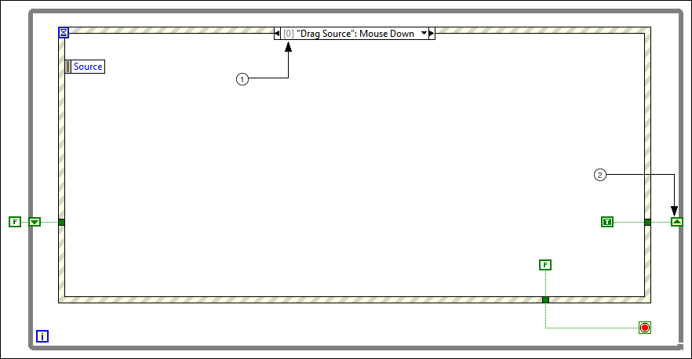

Step 2: Prepare the VI to Detect When the User Causes Drag-and-Drop Events to Occur
When the user tries to drag and drop data between controls, he or she causes particular events to occur. To allow the user to successfully copy or move data from the drag source to the drop target, you must configure the relevant events to interpret user actions as drag-and-drop behavior.
What to Use
Use the following block diagram objects to prepare the VI to detect when the user causes drag-and-drop events to occur:
Create the following block diagram to prepare the VI to detect when the user causes drag-and-drop events to occur.

The following list describes important details about the previous block diagram:
Use the Event structure to detect when events relevant to the drag-and-drop operation occur. Add the following events to the Event structure:
"Drag Source": Mouse Down—Detects when the cursor is within the bounds of the drag source and the user presses the mouse button.
"Pane": Mouse Up—Detects when the user releases the mouse button within the bounds of the pane.
"Drag Source": Mouse Leave—Detects when the user moves the cursor outside the bounds of the drag source.
"Drop Target": Drag Enter—Detects when the user moves the cursor within the bounds of the drop target.
"Drop Target": Drop—Detects when the user releases the mouse button within the bounds of the drop target.
Note The controls in the events above are labeled Drag Source and Drop Target. To implement drag-and-drop behavior, set the desired drag source to be the event source for the Mouse Down and Mouse Leave events, and set the desired drop target to be the event source for the Drag Enter and Drop events.
The shift register tracks whether to start the drag-and-drop operation when the mouse leaves the bounds of the drag source. The Mouse Down event provides a TRUE value to the shift register, which allows the drag source to provide the drag data during the Mouse Leave event only if the Mouse Down event occurred.
 Add
Add  Find
Find